Porto Velho
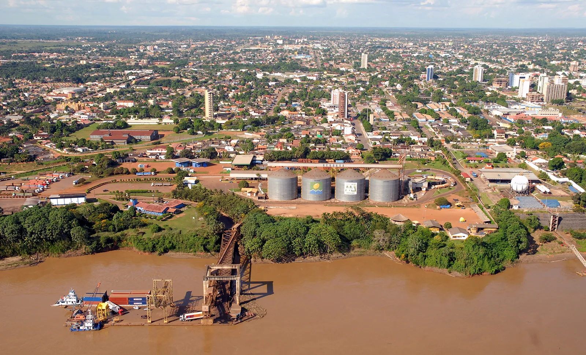Porto Velho, a capital do estado de Rondônia, é um destino que combina história, natureza e cultura. Localizada na região Norte do Brasil, a cidade tem uma importância estratégica, já que é um ponto de acesso para quem deseja explorar a Amazônia Ocidental. Fundada em 1914, Porto Velho teve um crescimento acelerado devido à construção da Estrada de Ferro Madeira-Mamoré, que conectava o Brasil ao Peru, e até hoje é um dos legados históricos mais importantes da cidade.
Com uma rica cultura que reflete a influência indígena, africana e europeia, Porto Velho atrai turistas pela sua natureza exuberante, com rios, florestas e parques, além de uma rica história ferroviária. A cidade também é ponto de partida para aventuras na Amazônia, oferecendo atividades como passeios de barco e trekking em meio à floresta. A gastronomia local, que inclui pratos típicos como tacacá, peixe assado e tucupi, também é um grande atrativo para os visitantes.
Principais pontos turísticos
- Estrada de Ferro Madeira-Mamoré 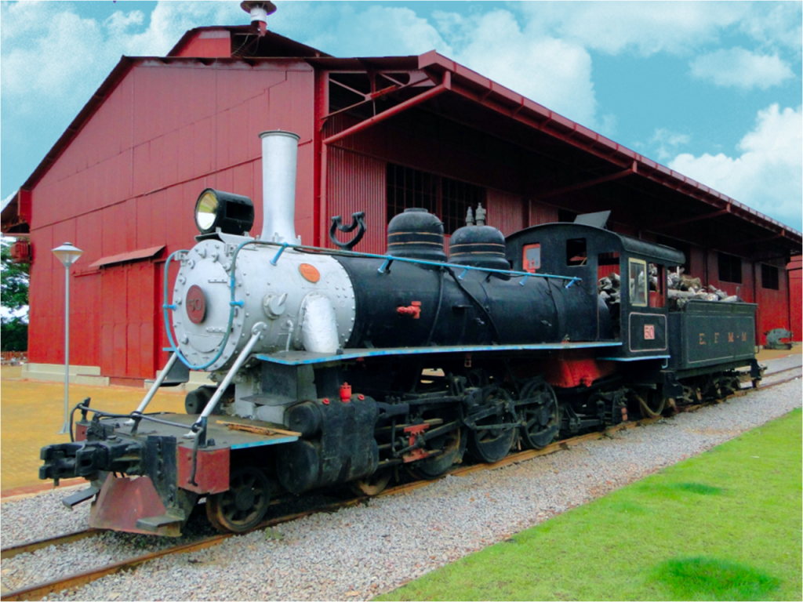
- Mercado Municipal de Porto Velho 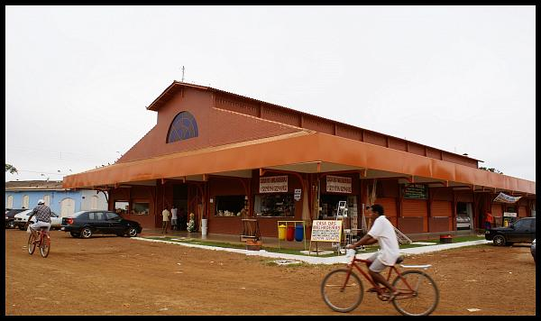
- Morro do Cristo 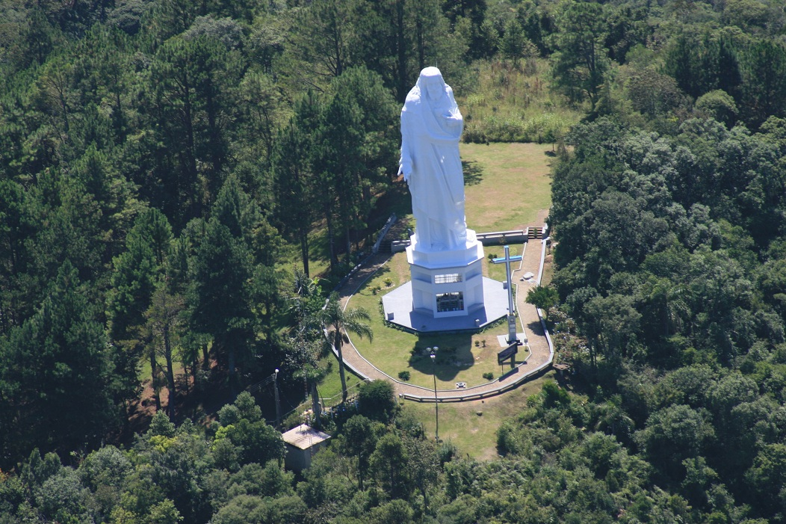
- Passeios de barco pelos rios 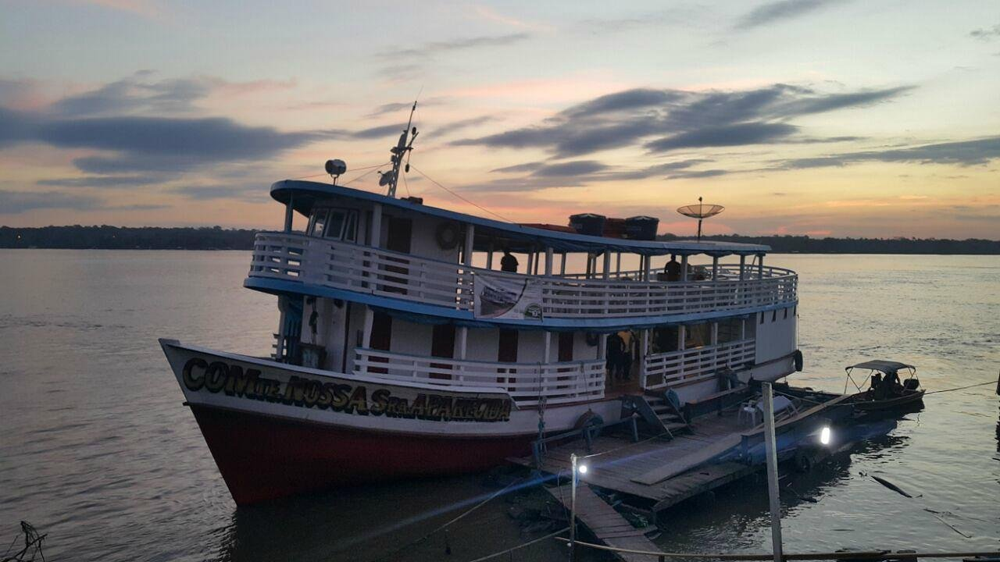
- Parque Nacional de Juruena 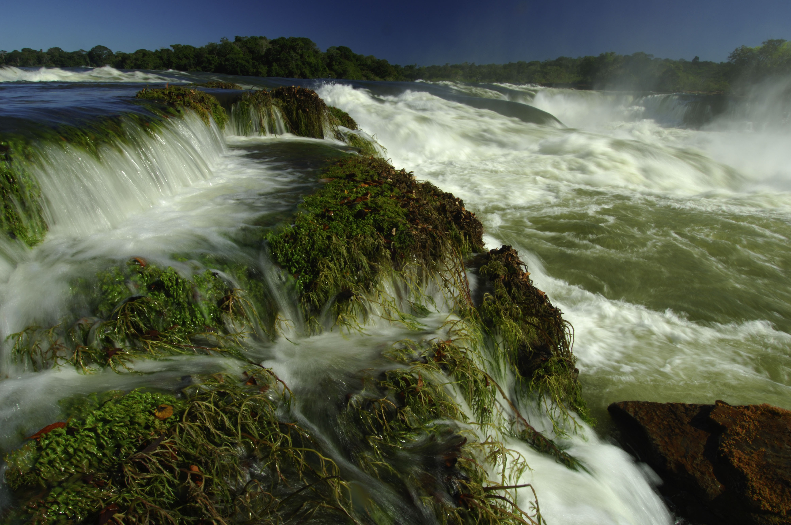
A Estrada de Ferro Madeira-Mamoré é um dos maiores ícones históricos de Porto Velho e um dos principais pontos turísticos da cidade. Esta ferrovia foi construída no início do século XX, com o objetivo de conectar o Brasil ao Peru, e ficou famosa por seu enorme custo humano e financeiro. Hoje, o local abriga um museu e a estação ferroviária restaurada, onde os turistas podem aprender sobre sua construção e importância histórica, além de realizar passeios de trem pela região.
O Mercado Municipal é o lugar perfeito para conhecer o cotidiano local e a cultura gastronômica de Porto Velho. O mercado oferece uma vasta gama de produtos típicos da região, como peixes frescos, frutas exóticas e ervas da Amazônia. Além disso, é um ótimo local para saborear pratos típicos da culinária local em um ambiente animado e colorido, onde é possível interagir com os moradores.
O Morro do Cristo é um dos pontos turísticos mais visitados de Porto Velho, oferecendo uma vista panorâmica deslumbrante da cidade e do entorno. O local é ideal para quem deseja apreciar a paisagem e tirar fotos de sua vista incrível, além de ser um ponto de lazer para os moradores e turistas. No topo, está uma imagem de Cristo Redentor, que atrai fiéis e turistas para momentos de reflexão e contemplação.
Porto Velho é cortada por vários rios da região Amazônica, como o Madeira e o Guaporé, que oferecem excelentes oportunidades para passeios de barco. Esses passeios permitem que os turistas contemplem a rica biodiversidade da região, conheçam comunidades ribeirinhas e vivenciem a vida ao longo dos rios amazônicos. Alguns passeios ainda incluem paradas em ilhas e praias de água doce, ideais para banhos e descanso.
Embora esteja mais distante da cidade, o Parque Nacional de Juruena, localizado no estado de Mato Grosso, é uma excelente opção para quem deseja explorar mais a fundo a natureza amazônica. A cerca de 250 km de Porto Velho, esse parque oferece trilhas, observação de vida selvagem e passeios de barco, sendo uma opção de ecoturismo para os visitantes que querem conhecer mais sobre o bioma amazônico.
Principais pontos gastronômicos
- Deleite Gourmet 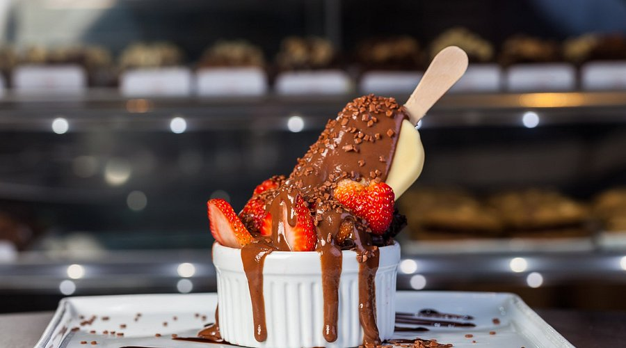
- Localização: São Cristovão.
- Casarão do Peixe 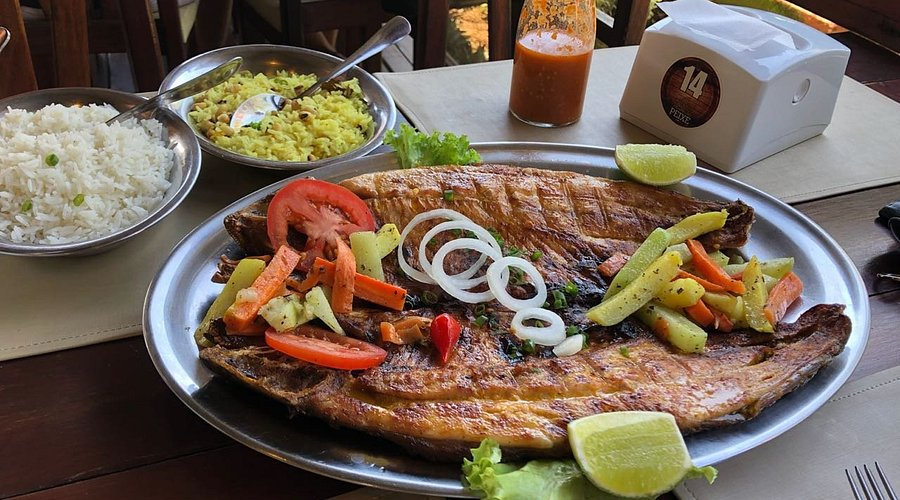
- Localização: Olaria.
- Texas Grill 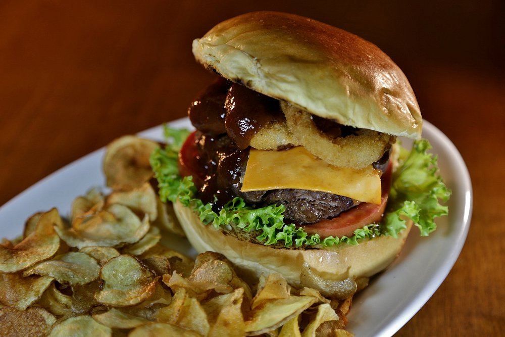
- Localização: Embratel.
- Almanara 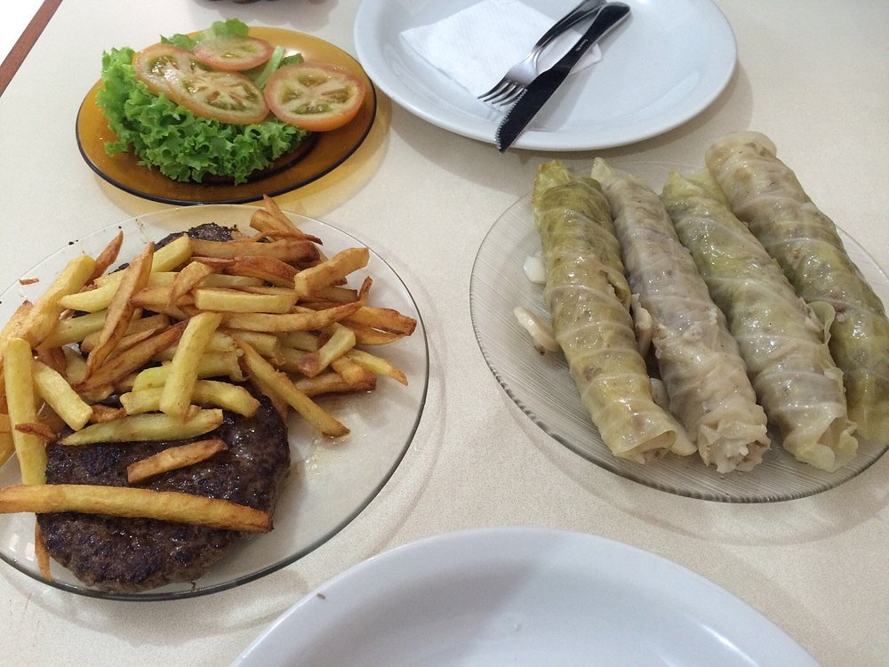
- Localização: Centro de Porto Velho.
O Deleite Gourmet é uma opção de restaurante bastante interessante para você conhecer em Porto Velho. Afinal, ele mistura cafeteria, doceria e até mesmo hamburgueria. Entre os destaques da casa, temos os hambúrgueres artesanais de dar água na boca, além de doces típicos da região. Por outro lado, vale citar que os brigadeiros do Deleite Gourmet são considerados os melhores de Porto Velho. Além disso, o Deleite Gourmet também ficou famoso por seus cafés, especialmente o expresso, que faz muito sucesso entre os visitantes que desejam conhecer esse restaurante gourmet. Entretanto, conta com um cardápio bem acessível, justamente para que você possa experimentar os melhores doces e salgados de Porto Velho sem pesar no seu bolso.
Com uma decoração delicada e sendo um ambiente bem intimista, o Deleite Gourmet é um dos melhores restaurantes em Porto Velho se você procura um lugar tranquilo e admirável para fazer um lanche da tarde.
Sendo uma opção bastante acessível para você economizar na sua viagem, o Casarão do Peixe é um dos melhores restaurantes em Porto Velho por unir boa comida com preço justo. Por lá, podemos nos deliciar com o famoso assado da casa, além do tambaqui assado, um prato bem típico da região. Além disso, ele também conta com outros pratos incríveis, como o pirarucu no jambu, além de uma moqueca de peixe sem igual. Por outro lado, vale citar que o Casarão do Peixe também pensou em comida acessível e, atualmente, também oferece porções e pratos sem glúten.
Sendo o melhor lugar de Porto Velho para experimentar a comida local, o Casarão do Peixe é ideal para você levar a sua família em viagem, e almoçar os melhores pratos do Norte do Brasil.
Sendo uma opção refinada para quem deseja provar as melhores carnes da cidade, o Texas Grill se tornou um dos melhores restaurantes em Porto Velho por ser original e bastante versátil. Focado em carnes especializadas e comida brasileira, o Texas Grill serve desde porções simples a pratos executivos, passando pelas carnes grelhadas que são a especialidade da casa. O restaurante ficou famoso por servir porções bastante fartas, ideal para um almoço em família. Além disso, ele conta com um espaço Kids para você levar os pequenos enquanto almoça. Outro ponto interessante do Texas Grill é o seu ambiente, com uma decoração clássica de steakhouse. Também tendo opções de self-service, o Texas Grill é, sem dúvidas, um dos melhores lugares para almoçar em Porto Velho.
Por outro lado, se você quer curtir uma boa comida, mas aproveitar um bom drink, a casa também serve cervejas artesanais e coquetéis especiais.
O Restaurante Almanara é focado na comida libanesa e árabe, sendo um dos maiores populares no segmento na cidade. Por ser um dos restaurantes mais antigos da cidade, o Almanara exala tradição e dinamismo, além de contar com um espaço super adequado para todos os tipos de públicos. Entre os maiores destaques da casa, temos as tradicionais esfihas e o kibe cru. Além disso, eles também contam com os clássicos charutos árabes, feitos de alface. Outro ponto interessante do Almanara é que ele também serve comida regional, como o filé de carne e os espetinhos de carne com arroz. E o preço de seus pratos é justo e acessível.
Com mais de 50 anos de existência, o Almanara já pertence à história de Porto Velho, e é uma excelente opção para os turistas que desejam conhecer os lugares mais históricos da cidade.
Principais pontos culturais
- Museu Ferroviário 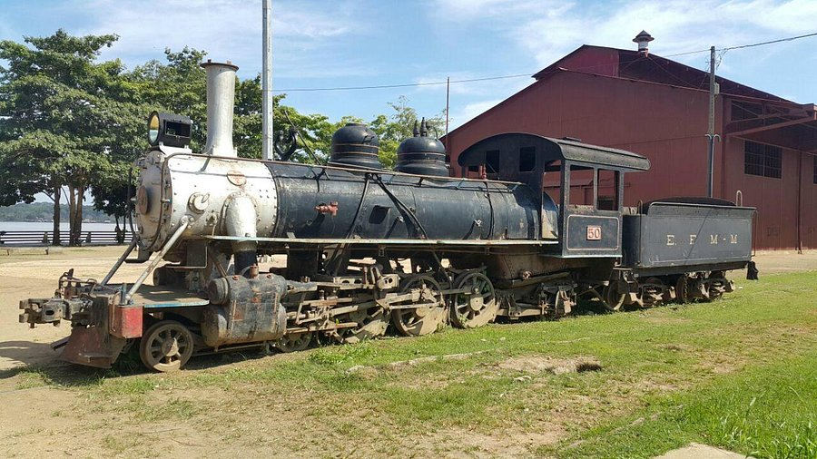
- Localização: Centro de Porto Velho.
- Teatro Banzeiro 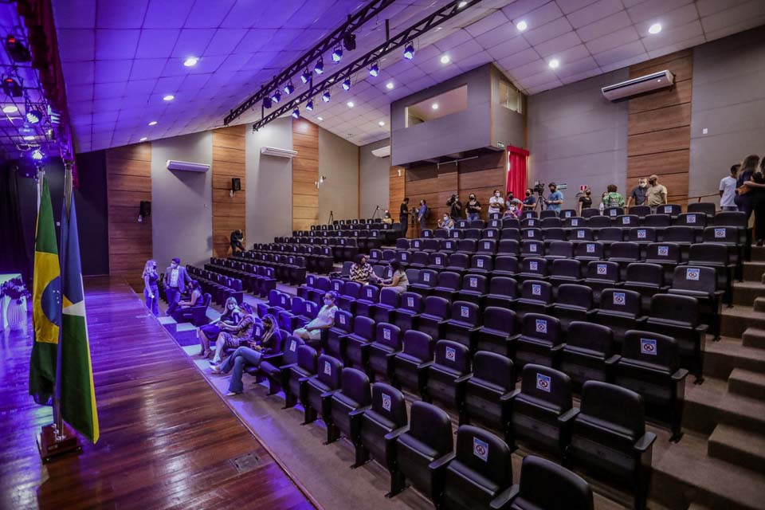
- Localização: Centro de Porto Velho.
- Palácio Getúlio Vargas 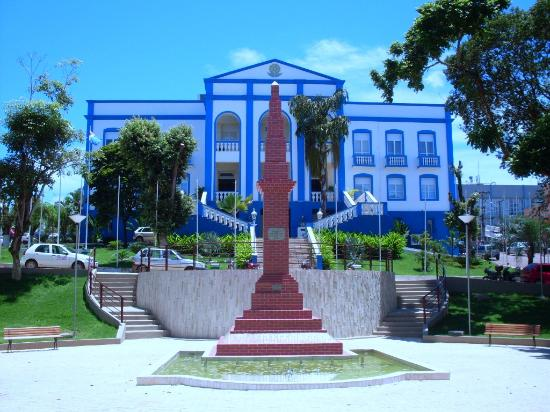
- Localização: São Cristovão.
- Palácio da Cultura 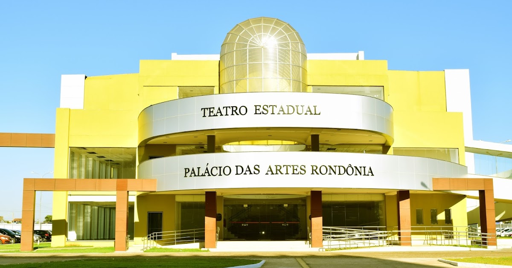
- Localização: Olaria.
O Museu Ferroviário é um dos principais pontos culturais da cidade e um local imperdível para quem deseja conhecer mais sobre a história da Estrada de Ferro Madeira-Mamoré e sua importância para o desenvolvimento da cidade e da região. O museu exibe itens históricos, como locomotivas antigas, equipamentos ferroviários e documentos que ilustram a história da ferrovia, que foi fundamental para a economia local.
O Teatro Banzeiro é um dos principais espaços culturais de Porto Velho, oferecendo uma programação variada que inclui peças teatrais, apresentações de dança, shows musicais e eventos culturais. O teatro é um excelente ponto para quem deseja conhecer a cena cultural da cidade e ver de perto as produções locais.
O Palácio Getúlio Vargas é um importante marco arquitetônico e cultural de Porto Velho. A construção do edifício remonta à década de 1940 e, hoje, ele serve como sede do governo estadual. O prédio também abriga eventos culturais, exposições de arte e outras atividades artísticas. Sua arquitetura neoclássica e o valor histórico tornam-no um ponto cultural de destaque.
O Palácio da Cultura em Porto Velho é um importante ponto cultural da cidade, situado no centro histórico da capital de Rondônia. O edifício, de arquitetura imponente, foi inaugurado em 1936 e inicialmente serviu como sede do governo estadual. Atualmente, o Palácio da Cultura é um centro de preservação e promoção da cultura local, abrigando exposições, eventos artísticos e culturais, além de ser um ponto de encontro para artistas e a comunidade.
O Palácio é um marco histórico e arquitetônico, destacando-se por seu estilo neoclássico. No interior, o espaço conta com diversas salas e galerias dedicadas a exposições temporárias de arte, artesanato e apresentações culturais. O local também organiza oficinas e atividades educativas voltadas para a arte e a cultura de Rondônia.
Além de ser um importante centro cultural, o Palácio da Cultura é uma referência no turismo local, atraindo tanto moradores quanto visitantes interessados em conhecer mais sobre a história e as manifestações artísticas da região. O prédio é um dos principais pontos turísticos de Porto Velho, funcionando como um elo entre o passado histórico da cidade e o cenário cultural contemporâneo.